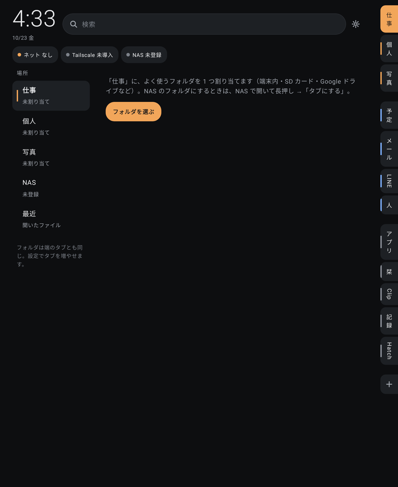
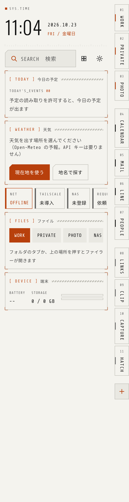
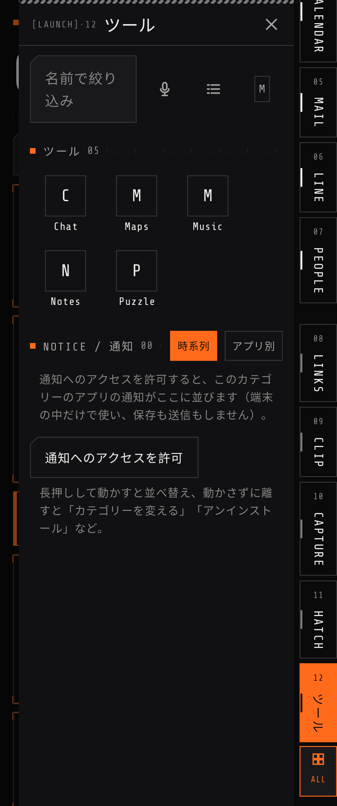
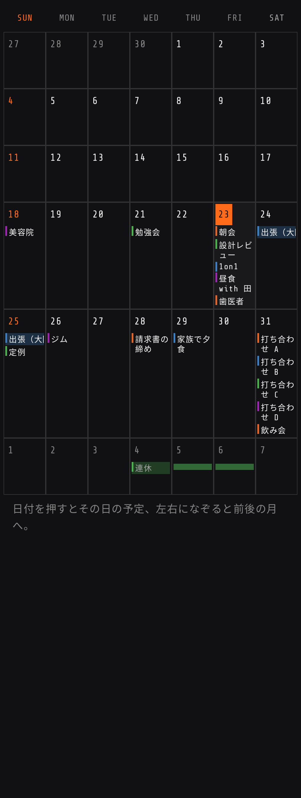
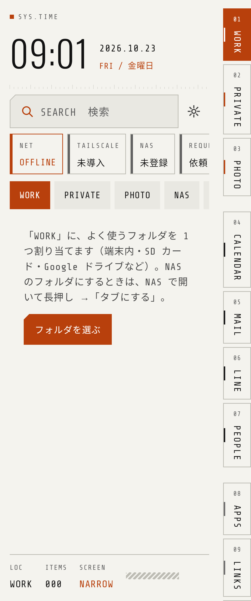
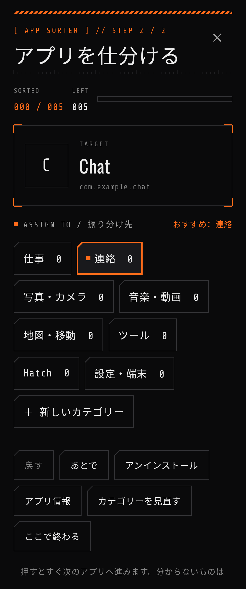
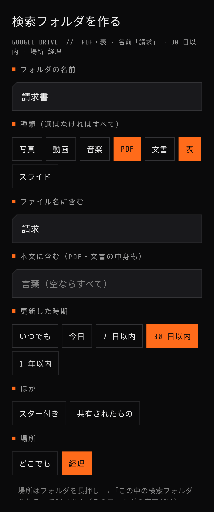
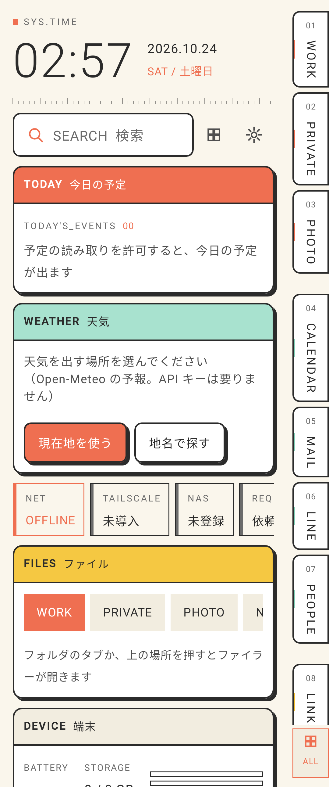
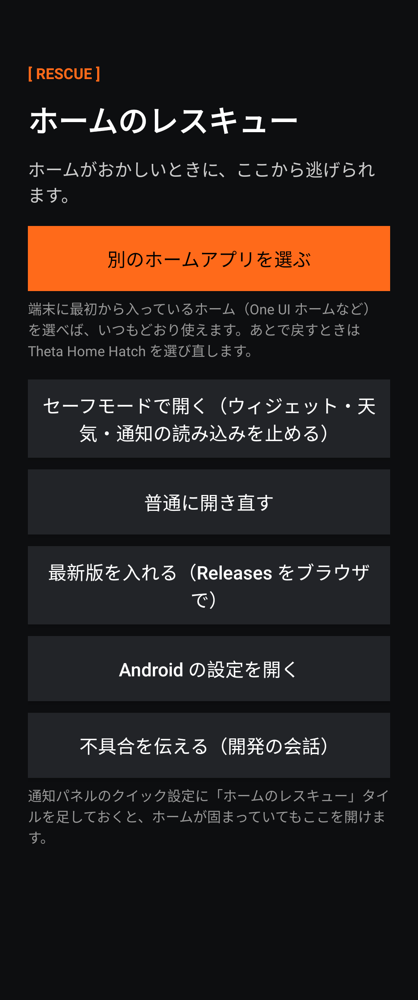
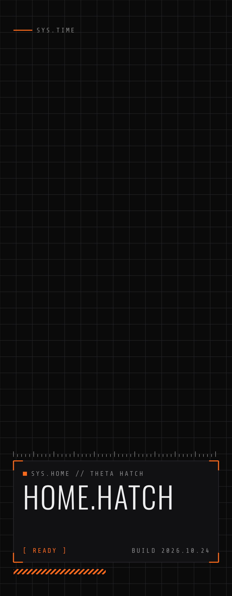

HOME.HATCH
背景はファイラー、画面の端にタブ。
アイコンを並べない、計器盤（HUD）のようなホームアプリ。
Galaxy Z Fold5（閉じた画面・開いた画面）、Alldocube iPlay 60/80 Pro、Unihertz Titan 2 を想定。実機での確認は進行中のベータ版です。

できること
ここで試せる
通知をスワイプ
右へ＝既読（「既読」のボタンがあればそれを押す）、左へ＝返信。カテゴリーのタブに、そのカテゴリーのアプリの通知が集まります。
アイコンを 3 色に
地・基本・アクセントの 3 段の「型」を作り、表示のときに色を塗ります。配色を変えても作り直しは要りません。
声でアプリを開く
START を長押しして話すと、そのアプリを開きます。下に言葉を入れてみてください（例：かめら開いて・line・電話）。
画面









画面の幅で形が変わる
| 端末 | 幅 | 背景 | ドロワー |
|---|---|---|---|
| Galaxy Z Fold5（閉じた画面）・Titan 2 | 600dp 未満 | ダッシュボード（今日の予定・天気・つながり・ファイル・端末） | 重ねて出す |
| Galaxy Z Fold5（開いた画面） | 690dp〜 | ファイラー（場所の一覧＋中身） | 1 枚を横に並べて出しておける |
| iPlay 60 / 80 Pro（横） | 1180dp〜 | ファイラー（＋中身のプレビュー） | 2 枚まで並べられる |
ウィジェットの並びと大きさは、閉じた画面と開いた画面で別々に覚えます。Titan 2 は物理キーボードで Alt＋キー（C 予定・M メール・L LINE・A アプリ…）、文字を打つとすぐ検索。
入れ方
- Releases から
ThetaHomeHatch-<版>.apkを入れる（提供元不明のアプリの許可が要ります） - 普通のアプリとして開き、フォルダのタブにフォルダを割り当てる
- 画面上部の「HOME 未設定」から、既定のホームにする
- 以後は画面上部の「UPDATE」から更新（1 時間ごとに確かめます）
- 欲しい機能は「REQUEST 依頼 ↗」から
通知・連絡先・予定は端末の中だけで使い、送りません。NAS のパスワードと Gemini の API キーは端末の鍵で暗号化して保存します。外へ送るのは、自分で使うと決めたもの（Gemini へのアイコン画像、天気のおおよその位置、Google ドライブの読み取り）だけです。
ベータ版でも詰まない
クイック設定のタイル
通知パネルの「ホームのレスキュー」。本体と別のプロセスで動くので、ホームが固まっていても開けます。
自動でレスキュー画面
起動してすぐ止まるのが続いたら、ホームの代わりにレスキュー画面。別のホームを選ぶ・セーフモード・最新版を入れる。
固定の START
端のタブのいちばん下に、いつでも全アプリを開ける START。タブを全部外しても詰みません。